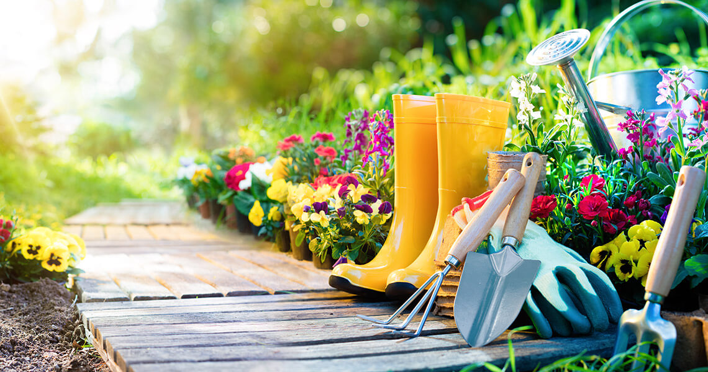
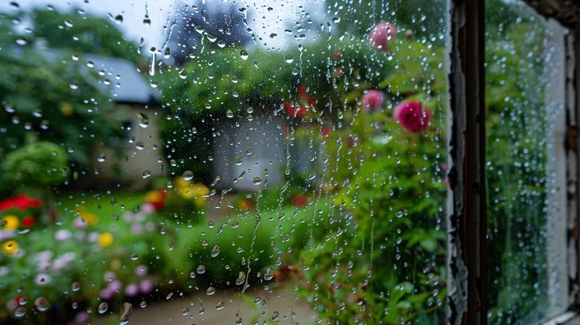

Seasonal Gardening Calendar
Use this guide to plan your urban garden throughout the year. Check your local frost dates for more accurate planting times.
Spring Schedule
| Task | Details |
|---|---|
| Start Indoor Seeds | Begin early crops such as tomatoes, basil, and peppers indoors. |
| Transplant Seedlings | Move hardy seedlings outside after the last frost date. |
| Plant Leafy Greens | Start succession planting for spinach, lettuce, and kale. |

Summer Schedule
| Task | Details |
|---|---|
| Increase Watering | Water more often; consider drip irrigation or self-watering containers. |
| Support Tomato Plants | Stake, prune, and check for pests regularly. |
| Plant Heat-Loving Crops | Peppers, cucumbers, basil, and rosemary grow well in summer heat. |
Fall & Winter Schedule
| Task | Details |
|---|---|
| Harvest & Clean Up | Pick remaining vegetables and remove spent plants. |
| Plant Cold-Hardy Greens | Start kale, spinach, and mache for fall harvest. |
| Protect Tender Plants | Bring herbs indoors or use covers to protect from frost. |
